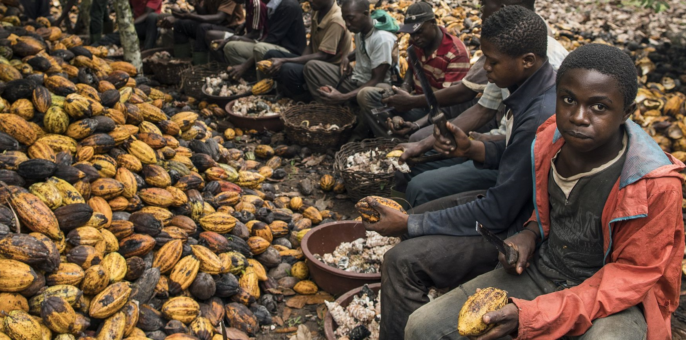

Chocolate is a product of the cacao bean, which grows primarily in the tropical climates of Western Africa, Asia, and Latin America. Western African countries, mostly Ghana and the Ivory Coast, supply more than 70% of the world’s cocoa. In Western Africa, cocoa is a commodity crop grown primarily for export; 60% of the Ivory Coast’s export revenue comes from its cocoa. On average, cocoa farmers earn less than $2 per day, an income below the poverty line. As a result, they often resort to the use of child labor to keep their prices competitive. The children of Western Africa are surrounded by intense poverty, and most begin working at a young age to help support their families. Some children end up on the cocoa farms because they need work and traffickers tell them that the job pays well. Other children are “sold” to traffickers or farm owners by their own relatives, who are unaware of the dangerous work environment and the lack of any provisions for an education. Often, traffickers abduct the young children from small villages in neighboring African countries, such as Burkina Faso and Mali, two of the poorest countries in the world. Once they have been taken to the cocoa farms, the children may not see their families for years, if ever. Recently, investigators have discovered children trafficked into Western African cocoa farms and coerced to work without pay. A child’s workday typically begins at six in the morning and ends in the evening. Some of the children use chainsaws to clear the forests. Other children climb the cocoa trees to cut bean pods using a machete. These large, heavy, dangerous knives are the standard tools for children on the cocoa farms,which violates international labor laws and a UN convention on eliminating the worst forms of child labor.

Evidence from Western Africa
Is child-labour free chocolate possible?
Consumers play an essential role in diminishing the food industry’s injustices. Child slavery on cocoa farms is a difficult issue to fully address because the most serious abuses take place across the world; however, that does not mean our responsibility is reduced, since chocolate is a luxury and not a necessity like fruits and vegetables.
How you can help?
Eventhough you may have a sweet tooth for chocolate you can still use your power as a consumer to buy responsibly produced chocolate. Here is a list of chocolate companies that are recommended or not by the Food Empowerment Project.
Watch this video!
The Dark Side of Chocolate - Child Slavery